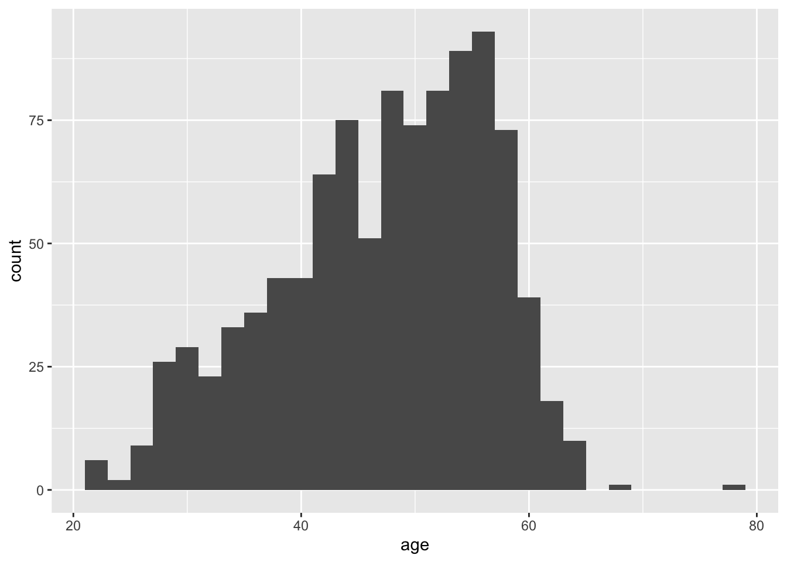
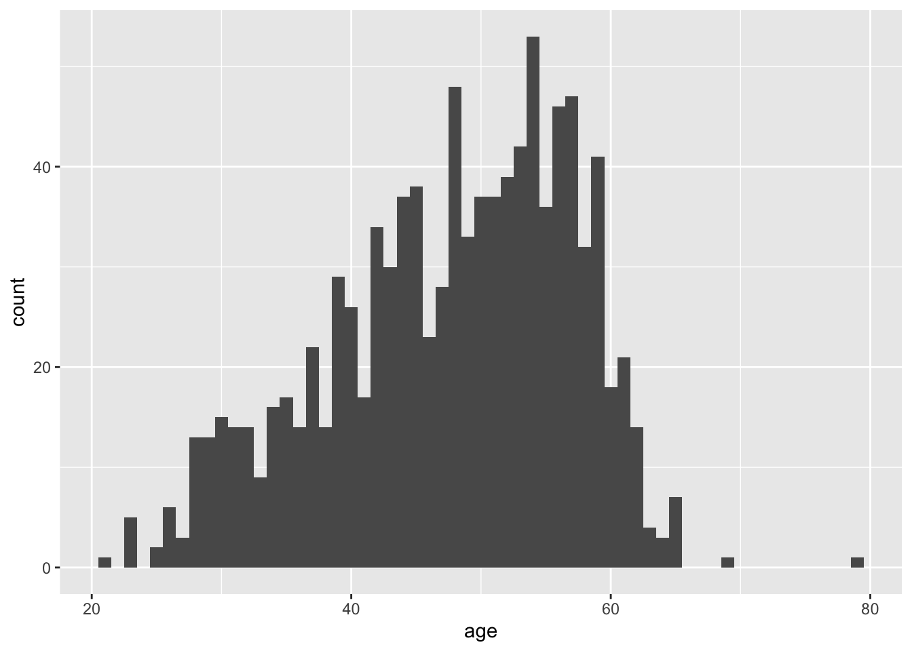
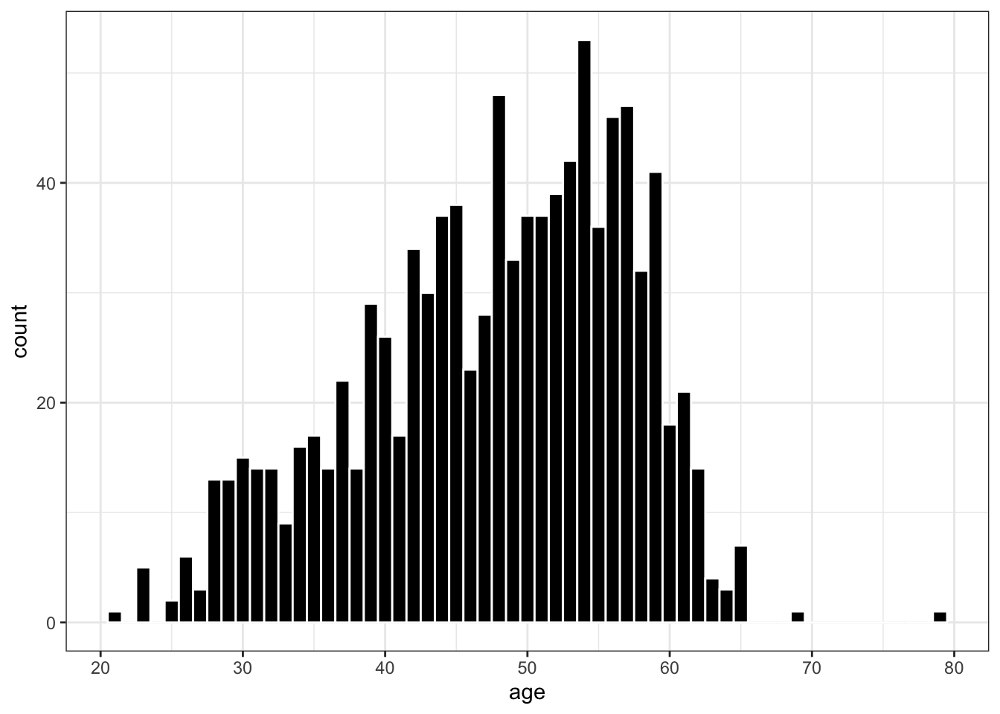
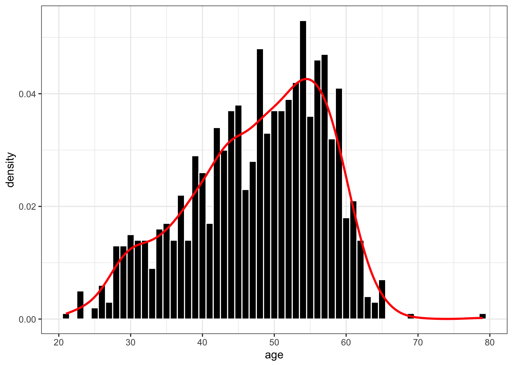
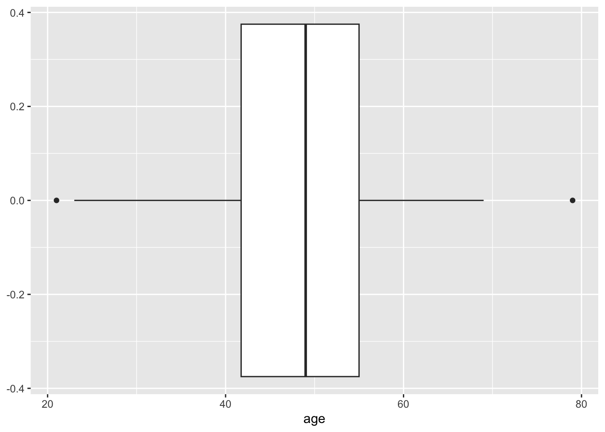
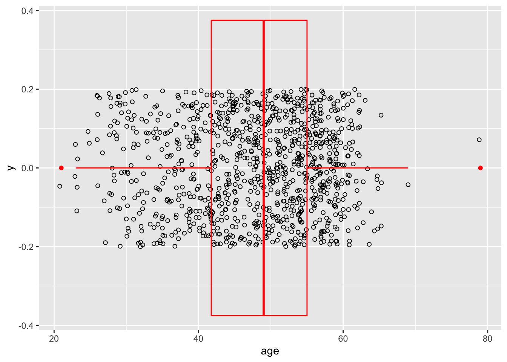
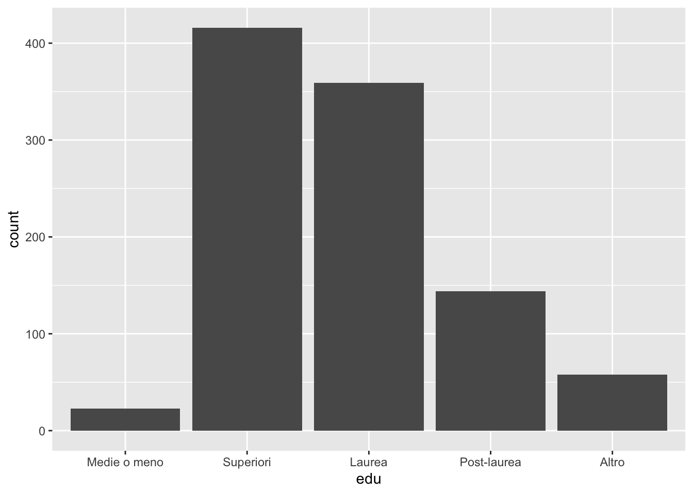
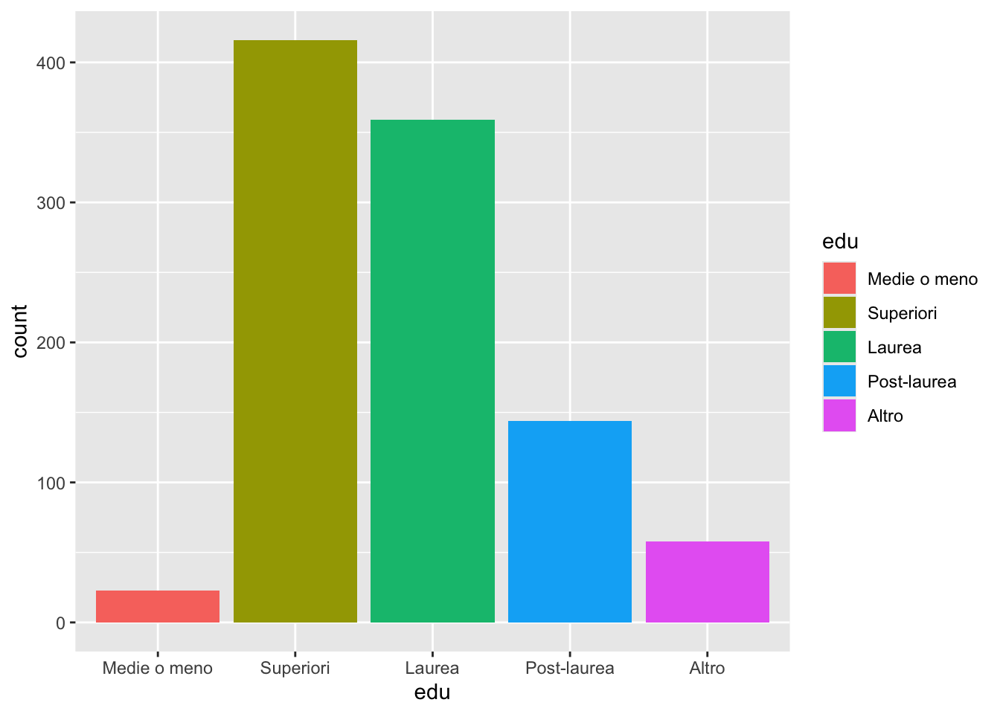
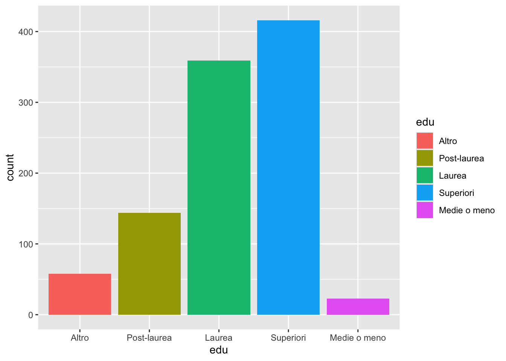
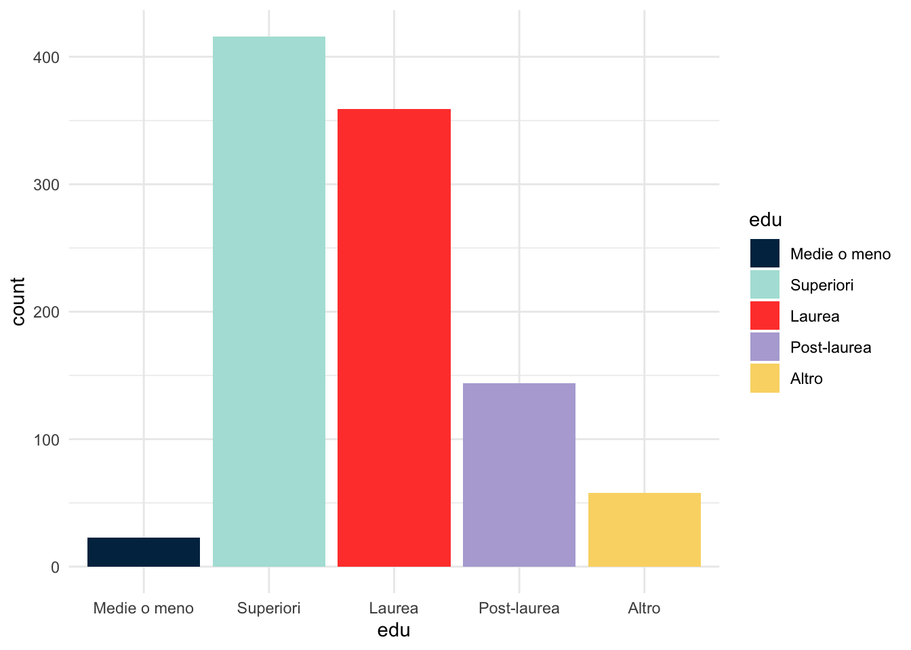

Chapter 4 Data visualization
We will now create and discuss data visualizations based on ggplot2 and the grammar of graphics. This chapter draws from the ggplot2 Cheat Sheet, the ggplot2 website, the visualization chapter from Wickham and Grolemund’s R for Data Science, and the third edition (in progress) of Wickham’s ggplot2 textbook.
# Load packages
library(tidyverse)
# Clear the workspace
rm(list = ls())
# Let's load the data we cleaned in the previous chapter
load("my_data.rda")In its simplest form, any ggplot2 graph is created with the following type of code:
ggplot(data = <Data>) +
<Geom_Function>(mapping = aes(<Mappings>)) +
<Scale_Function> +
<Theme_Function>We will now discuss the five graph components that are visible in that code:
<Data>: the underlying data.<Geom_Function>: geometrical objects (or geoms). A plot consists of one or more geoms (one in each layer of the plot).<Mappings>: an aesthetic mapping from variables in the data to visual properties (i.e., aesthetics) of a geom. Each geom has one or more aesthetic mappings.<Scale_Function>: a scale that assigns a specific visual attribute (i.e., a value of the aesthetic) to each value of a variable in the data. Each aesthetic mapping has one scale.<Theme_Function>: general, non-data graphical elements of the plot (e.g., background color, text fonts, etc.).
4.1 Univariate distributions
4.1.1 Continuous variables
Histograms.
Here we only have one aesthetic mapping in aes(): values of age are mapped to values of x (the horizontal axis).
## `stat_bin()` using `bins = 30`. Pick better value with `binwidth`.
Note that there is also a statistical transformation being applied to the data before plotting (which one?). We can modify that transformation of the data: for example, pick a different width for the histogram bins.

Modify visual properties of the plot: bin color and fill.
Modify the scale of the x aesthetic mapping.
ggplot(data = data) +
geom_histogram(aes(x = age), binwidth = 1,
color = "white", fill = "black") +
scale_x_continuous(breaks = seq(20, 80, by = 10))Modify the general theme of the plot.
ggplot(data = data) +
geom_histogram(aes(x = age), binwidth = 1,
color = "white", fill = "black") +
scale_x_continuous(breaks = seq(20, 80, by = 10)) +
theme_bw()
Let’s add another geom in a new layer: a density plot. Note that now the bin height and y axis are not count values but density values: this is specified by setting the y aesthetic in aes().
ggplot(data = data) +
geom_histogram(aes(x = age, y = after_stat(density)), binwidth = 1,
color = "white", fill = "black") +
geom_density(aes(x = age), linewidth = 1, color = "red") +
scale_x_continuous(breaks = seq(20, 80, by = 10)) +
theme_bw()
Boxplots.

In a new layer, we can use a new geom to add the actual data points on top of the boxplot (with some vertical jittering).
set.seed(194)
ggplot(data = data) +
geom_point(aes(x = age, y = 0),
shape = 21,
position = position_jitter(h = 0.2)) +
geom_boxplot(aes(x = age), fill = NA, color = "red")
4.1.2 Categorical variables
Simple bar plots.

Two aesthetics (x and fill) for the same variable (edu).

Note the importance of the order of levels in edu factor.
## [1] "Medie o meno" "Superiori" "Laurea" "Post-laurea" "Altro"## [1] "Altro" "Post-laurea" "Laurea" "Superiori" "Medie o meno"# Make the change in the data
data.rev <- data |>
mutate(edu = fct_rev(edu))
# Not plot with the new level order
ggplot(data = data.rev) +
geom_bar(aes(x = edu, fill = edu))
Back to the original level order, modify the fill color scale (and theme).
ggplot(data = data) +
geom_bar(aes(x = edu, fill = edu)) +
scale_fill_manual(values = c(`Medie o meno` = "#002e4e",
Superiori = "#afe1da",
Laurea = "#ff4639",
`Post-laurea` = "#b4abd7",
Altro = "#fad774")) +
theme_minimal()